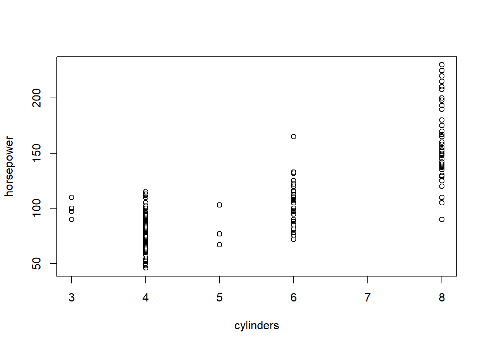

Chapter 4 Data Frame
A data frame is more general than a matrix in that different columns can contain different modes of data (numeric, character, factor, logical etc.). We can think of a data frame as a excel sheet where each row represents an observation, while each column represents a variable associated with the observation. Data frames are the basic data structure you’ll deal with in R.
4.1 Define a data.frame manually
Our first exercise is to define a data frame manually to help you familize the functions related to data frame.
Suppose we are building a database of diabetes patients. For simplicity, suppose we have only four patients, with the following patient information:
patientID = c(1, 2, 3, 4)
age = c(25, 34, 28, 52)
diabetes = c("Type1", "Type2", "Type1", "Type1")
status = c("Poor", "Median", "Good", "Poor")We want to combine these information into a data frame. The function to construct data fram is as below: mydata = data.frame(col1, col2, col3,…) where col1, col2, col3, … are the column of the data frame. Names for each column can be provided with the names function. The following code makes this clear.
# this create an empty data frame.
# We sometime need to do that when we do not know the ultimate dimension of the data frame.
patientdata = data.frame()
patientdata = data.frame(patientID, age, diabetes, status)
# display the data frame on the screen to visually check the dataset
patientdata## patientID age diabetes status
## 1 1 25 Type1 Poor
## 2 2 34 Type2 Median
## 3 3 28 Type1 Good
## 4 4 52 Type1 PoorWe can use str() to examine the structure of the data frame. str() is a very useful function to examine an object in R. We will use this function often.
## 'data.frame': 4 obs. of 4 variables:
## $ patientID: num 1 2 3 4
## $ age : num 25 34 28 52
## $ diabetes : chr "Type1" "Type2" "Type1" "Type1"
## $ status : chr "Poor" "Median" "Good" "Poor"Note that each column of a data frame must have have same data mode, but you can put columns of different modes together to form the data frame. Because data frames are close to what analysts typically think of as datasets, we’ll use the terms columns and variables interchangeably when discussing data frames.
4.2 Subsetting data.frame
There are several ways to identify the elements of a data frame. You can use the index notation you used before (for example, with matrices) or you can specify column names.
Subset the first 2 column of the patientdata by index:
## patientID age
## 1 1 25
## 2 2 34
## 3 3 28
## 4 4 52Subset the first two columns of the data frame by variable names:
## diabetes status
## 1 Type1 Poor
## 2 Type2 Median
## 3 Type1 Good
## 4 Type1 PoorSubset one specific column (e.g., age) by its name:
## [1] 25 34 28 52Now, change diabetes and status into factors because they are categorical variables:
patientdata$diabetes<-factor(patientdata$diabetes)
patientdata$status<-factor(patientdata$status, ordered = TRUE, levels = c("Poor", "Median","Good") )
patientdata## patientID age diabetes status
## 1 1 25 Type1 Poor
## 2 2 34 Type2 Median
## 3 3 28 Type1 Good
## 4 4 52 Type1 Poor## 'data.frame': 4 obs. of 4 variables:
## $ patientID: num 1 2 3 4
## $ age : num 25 34 28 52
## $ diabetes : Factor w/ 2 levels "Type1","Type2": 1 2 1 1
## $ status : Ord.factor w/ 3 levels "Poor"<"Median"<..: 1 2 3 14.3 Import csv data as data.frame.
In most application, we will import dataset (i.e., csv, txt, excel files) from local computer into R as data frame. Here we will learn how to read data into R as data frame.
The famous Auto.csv is a very standard dataset for R programming. The Auto.csv contains the basic information of over 300 kinds of Auto. We will learn to import this dataset.
I have uploaded the Auto.csv file in the R-studio cloud to aviod the trouble of finding the file in each individuals’ computer. Look at the files in the bottom right pannel. The file is in csv format, thus we will use read.csv() function.
## 'data.frame': 392 obs. of 10 variables:
## $ mpg : num 18 15 18 16 17 15 14 14 14 15 ...
## $ cylinders : int 8 8 8 8 8 8 8 8 8 8 ...
## $ displacement: num 307 350 318 304 302 429 454 440 455 390 ...
## $ horsepower : int 130 165 150 150 140 198 220 215 225 190 ...
## $ weight : int 3504 3693 3436 3433 3449 4341 4354 4312 4425 3850 ...
## $ acceleration: num 12 11.5 11 12 10.5 10 9 8.5 10 8.5 ...
## $ year : int 70 70 70 70 70 70 70 70 70 70 ...
## $ rating : int 3 1 3 2 1 2 1 2 1 1 ...
## $ origin : chr "US" "US" "US" "US" ...
## $ name : chr "chevrolet chevelle malibu" "buick skylark 320" "plymouth satellite" "amc rebel sst" ...Unlikely excel which shows data in a tabular format, R uses different ways for us to visually examine the data. We can use head() and tail() to examine first/last 6 rows of the data.
## mpg cylinders displacement horsepower weight acceleration year rating origin
## 1 18 8 307 130 3504 12.0 70 3 US
## 2 15 8 350 165 3693 11.5 70 1 US
## 3 18 8 318 150 3436 11.0 70 3 US
## 4 16 8 304 150 3433 12.0 70 2 US
## 5 17 8 302 140 3449 10.5 70 1 US
## 6 15 8 429 198 4341 10.0 70 2 US
## name
## 1 chevrolet chevelle malibu
## 2 buick skylark 320
## 3 plymouth satellite
## 4 amc rebel sst
## 5 ford torino
## 6 ford galaxie 500## mpg cylinders displacement horsepower weight acceleration year rating
## 387 27 4 151 90 2950 17.3 82 2
## 388 27 4 140 86 2790 15.6 82 3
## 389 44 4 97 52 2130 24.6 82 3
## 390 32 4 135 84 2295 11.6 82 3
## 391 28 4 120 79 2625 18.6 82 2
## 392 31 4 119 82 2720 19.4 82 4
## origin name
## 387 US chevrolet camaro
## 388 US ford mustang gl
## 389 EU vw pickup
## 390 US dodge rampage
## 391 US ford ranger
## 392 US chevy s-10We can use summary() function to quickly examine the distribution of each variable.
## mpg cylinders displacement horsepower weight
## Min. : 9.00 Min. :3.000 Min. : 68.0 Min. : 46.0 Min. :1613
## 1st Qu.:17.00 1st Qu.:4.000 1st Qu.:105.0 1st Qu.: 75.0 1st Qu.:2225
## Median :22.75 Median :4.000 Median :151.0 Median : 93.5 Median :2804
## Mean :23.45 Mean :5.472 Mean :194.4 Mean :104.5 Mean :2978
## 3rd Qu.:29.00 3rd Qu.:8.000 3rd Qu.:275.8 3rd Qu.:126.0 3rd Qu.:3615
## Max. :46.60 Max. :8.000 Max. :455.0 Max. :230.0 Max. :5140
## acceleration year rating origin
## Min. : 8.00 Min. :70.00 Min. :1.00 Length:392
## 1st Qu.:13.78 1st Qu.:73.00 1st Qu.:2.00 Class :character
## Median :15.50 Median :76.00 Median :2.00 Mode :character
## Mean :15.54 Mean :75.98 Mean :2.48
## 3rd Qu.:17.02 3rd Qu.:79.00 3rd Qu.:3.00
## Max. :24.80 Max. :82.00 Max. :4.00
## name
## Length:392
## Class :character
## Mode :character
##
##
## read.csv() is the function to read csv file into R as a data.frame. When using the function, you need to tell exactly where to find the data file. For example, if Auto.csv is saved in my computer at: “C:/Users/lxu25/Dropbox/Teaching/UNL Courses/SCMA 450/code/Auto.csv”. We can use the following code to read the file:
Notice, in the the file directory is “/”, not ". However, locating this data file can be a hassle, especially when your code is shared with others in your team because the data has a totally different directory in others’s computer. Therefore, it is the best practice to always create a seperate folder for your project and save both code and data in that folder. Since your data is in the same folder of your code, we can simply use the filename to locate the data file. Then share the folder together to others.
4.4 Subsetting data frame
Select by rows by index.
## mpg cylinders displacement horsepower weight acceleration year rating origin
## 2 15 8 350 165 3693 11.5 70 1 US
## name
## 2 buick skylark 320## mpg cylinders displacement horsepower weight acceleration year rating origin
## 3 18 8 318 150 3436 11.0 70 3 US
## 5 17 8 302 140 3449 10.5 70 1 US
## 7 14 8 454 220 4354 9.0 70 1 US
## name
## 3 plymouth satellite
## 5 ford torino
## 7 chevrolet impalaSelect column by index.
## [1] 130 165 150 150 140 198# You can customize the histgram to make it look nicer
hist(Auto[,4],xlab="horsepower", col="gray",breaks = 50, main=
"frequency of horsepower") hist() plot the histogram of a variable. You can use ?hist to examine the detail of the function.
We can select multiple columns (variables) at the same time.
## cylinders horsepower
## 1 8 130
## 2 8 165
## 3 8 150
## 4 8 150
## 5 8 140
## 6 8 198We can create a scatter plot between these two variables to see their relationship. This also shows the reason why want to subset data frame.

The scatter plot clearly demonstrates that a higher horsepower is assoicated with a larger number of cylinders.
We can also subset the dataset by variable name. We need to use $ for subsetting one variable with its variable name.
# Auto$mpg selects the variable mpg
# type hist[Auto$mpg] to get its distribution
hist(Auto$acceleration)## horsepower mpg weight
## 1 130 18 3504
## 2 165 15 3693
## 3 150 18 3436
## 4 150 16 3433
## 5 140 17 3449
## 6 198 15 4341Filter rows by condition:
## mpg cylinders displacement horsepower weight acceleration year rating
## 26 10 8 360 215 4615 14.0 70 2
## 27 10 8 307 200 4376 15.0 70 2
## 28 11 8 318 210 4382 13.5 70 2
## 29 9 8 304 193 4732 18.5 70 2
## 42 12 8 383 180 4955 11.5 71 1
## 67 11 8 429 208 4633 11.0 72 2
## 69 12 8 350 160 4456 13.5 72 1
## 90 12 8 429 198 4952 11.5 73 2
## 95 12 8 455 225 4951 11.0 73 1
## 103 11 8 400 150 4997 14.0 73 1
## 104 12 8 400 167 4906 12.5 73 2
## 106 12 8 350 180 4499 12.5 73 2
## 124 11 8 350 180 3664 11.0 73 2
## origin name
## 26 US ford f250
## 27 US chevy c20
## 28 US dodge d200
## 29 US hi 1200d
## 42 US dodge monaco (sw)
## 67 US mercury marquis
## 69 US oldsmobile delta 88 royale
## 90 US mercury marquis brougham
## 95 US buick electra 225 custom
## 103 US chevrolet impala
## 104 US ford country
## 106 US oldsmobile vista cruiser
## 124 US oldsmobile omega# select all rows with mpg less equal to 12 and greater equal to 11
Auto[Auto$mpg>=11 & Auto$mpg<=12,]## mpg cylinders displacement horsepower weight acceleration year rating
## 28 11 8 318 210 4382 13.5 70 2
## 42 12 8 383 180 4955 11.5 71 1
## 67 11 8 429 208 4633 11.0 72 2
## 69 12 8 350 160 4456 13.5 72 1
## 90 12 8 429 198 4952 11.5 73 2
## 95 12 8 455 225 4951 11.0 73 1
## 103 11 8 400 150 4997 14.0 73 1
## 104 12 8 400 167 4906 12.5 73 2
## 106 12 8 350 180 4499 12.5 73 2
## 124 11 8 350 180 3664 11.0 73 2
## origin name
## 28 US dodge d200
## 42 US dodge monaco (sw)
## 67 US mercury marquis
## 69 US oldsmobile delta 88 royale
## 90 US mercury marquis brougham
## 95 US buick electra 225 custom
## 103 US chevrolet impala
## 104 US ford country
## 106 US oldsmobile vista cruiser
## 124 US oldsmobile omegaWe can perform operation on existing variable and create new variables and add these new variable into the data frame.
E.g., The following code creates a new variable called horsepowerpercylinder, which is horsepower divided by # of cylinders, # and adds to the data frame.
## 'data.frame': 392 obs. of 11 variables:
## $ mpg : num 18 15 18 16 17 15 14 14 14 15 ...
## $ cylinders : int 8 8 8 8 8 8 8 8 8 8 ...
## $ displacement : num 307 350 318 304 302 429 454 440 455 390 ...
## $ horsepower : int 130 165 150 150 140 198 220 215 225 190 ...
## $ weight : int 3504 3693 3436 3433 3449 4341 4354 4312 4425 3850 ...
## $ acceleration : num 12 11.5 11 12 10.5 10 9 8.5 10 8.5 ...
## $ year : int 70 70 70 70 70 70 70 70 70 70 ...
## $ rating : int 3 1 3 2 1 2 1 2 1 1 ...
## $ origin : chr "US" "US" "US" "US" ...
## $ name : chr "chevrolet chevelle malibu" "buick skylark 320" "plymouth satellite" "amc rebel sst" ...
## $ horsepowerpercylinder: num 16.2 20.6 18.8 18.8 17.5 ...We can also rename variables using the names() function.
## [1] "mpg" "cylinders" "displacement"
## [4] "horsepower" "weight" "acceleration"
## [7] "year" "rating" "origin"
## [10] "name" "horsepowerpercylinder"# change the 11th variable name to power_per_cylinder
names(Auto)[11]="power_per_cylinder"
str(Auto)## 'data.frame': 392 obs. of 11 variables:
## $ mpg : num 18 15 18 16 17 15 14 14 14 15 ...
## $ cylinders : int 8 8 8 8 8 8 8 8 8 8 ...
## $ displacement : num 307 350 318 304 302 429 454 440 455 390 ...
## $ horsepower : int 130 165 150 150 140 198 220 215 225 190 ...
## $ weight : int 3504 3693 3436 3433 3449 4341 4354 4312 4425 3850 ...
## $ acceleration : num 12 11.5 11 12 10.5 10 9 8.5 10 8.5 ...
## $ year : int 70 70 70 70 70 70 70 70 70 70 ...
## $ rating : int 3 1 3 2 1 2 1 2 1 1 ...
## $ origin : chr "US" "US" "US" "US" ...
## $ name : chr "chevrolet chevelle malibu" "buick skylark 320" "plymouth satellite" "amc rebel sst" ...
## $ power_per_cylinder: num 16.2 20.6 18.8 18.8 17.5 ...To delete a variable from data frames:
## 'data.frame': 392 obs. of 10 variables:
## $ mpg : num 18 15 18 16 17 15 14 14 14 15 ...
## $ cylinders : int 8 8 8 8 8 8 8 8 8 8 ...
## $ displacement: num 307 350 318 304 302 429 454 440 455 390 ...
## $ horsepower : int 130 165 150 150 140 198 220 215 225 190 ...
## $ weight : int 3504 3693 3436 3433 3449 4341 4354 4312 4425 3850 ...
## $ acceleration: num 12 11.5 11 12 10.5 10 9 8.5 10 8.5 ...
## $ year : int 70 70 70 70 70 70 70 70 70 70 ...
## $ rating : int 3 1 3 2 1 2 1 2 1 1 ...
## $ origin : chr "US" "US" "US" "US" ...
## $ name : chr "chevrolet chevelle malibu" "buick skylark 320" "plymouth satellite" "amc rebel sst" ...To access the mpg in Auto data frame, we must use $ (e.g., Auto$mpg). If you simply use mpg, R would not know which data frame to look for mpg. But this causes the code too long and hard to read. We can use with() function to avoid that. E.g., plot the scatter plot between weight and mpg
 The general format of with() function is to: with(DATA FRAME, CODE USING THE DATA FRAME)
The general format of with() function is to: with(DATA FRAME, CODE USING THE DATA FRAME)
4.5 Write a data frame to your computer
We can use write.csv() to write the data frame to your local computer.
Note, row.names = TRUE will generate an automatic ID (i.e., 1,2,3, …) for each rows.
4.6 Summary
While all elements in vector and matrix must be the same type, data.frame allows different columns (i.e., variable) to be different types.
use Base R for creating plots.
subsetting data.frame using index and variable names.
Use read.csv() to read csv file into R as data.frame; learn to subset data.frame.
Use write.csv() to write data.frame from R to your local computer.